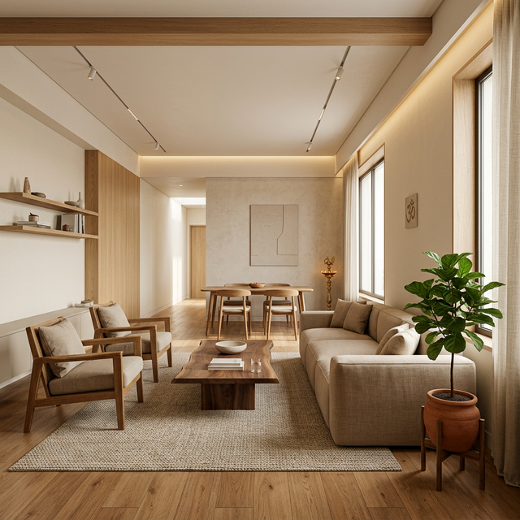

Vastu
Tips
Jan 15, 2026
Vastu Shastra Tips for Your New Home

Vastu Shastra is the ancient Indian science of architecture that harmonizes living spaces with natural forces. Implementing even small Vastu principles can significantly improve the flow of positive energy in your new SSV home.
Entrance and Master Bedroom
The entrance of the home should ideally face North, East, or North-East to ensure the entry of prosperity. The master bedroom is best situated in the South-West corner of the house to bring stability and health.
Kitchen Placement
The element of fire governs the South-East corner. Therefore, placing the kitchen in this direction is considered most beneficial for the family's well-being.